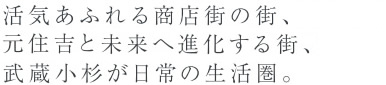
駅周辺の再開発プロジェクトが結実し、ビジネスや商業、文化の発信地として発展著しい「武蔵小杉」。
「元住吉」駅から1駅、散歩気分で出掛けたり、自転車に乗って気軽にアクセスできる便利さです。
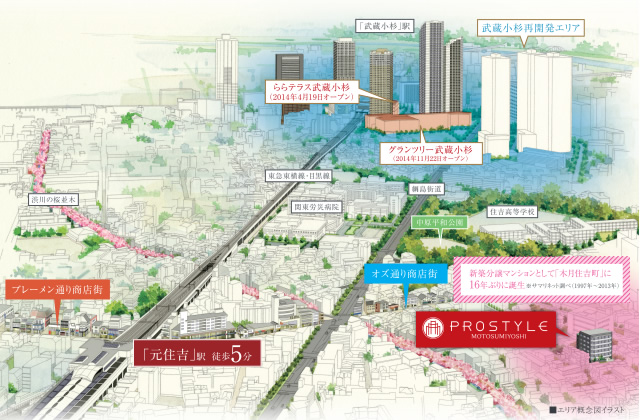
- 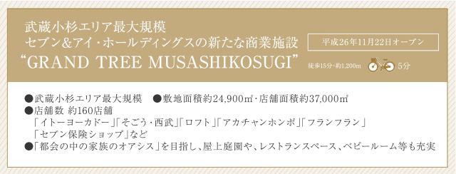
- 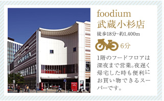
- 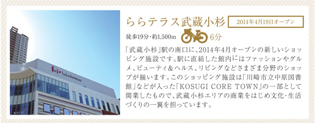
- 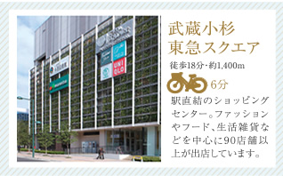
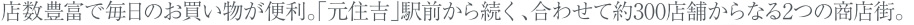
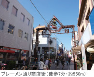
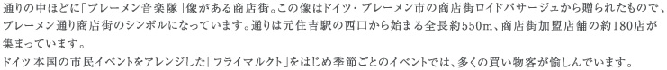
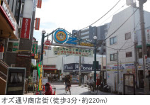
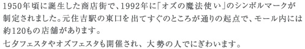
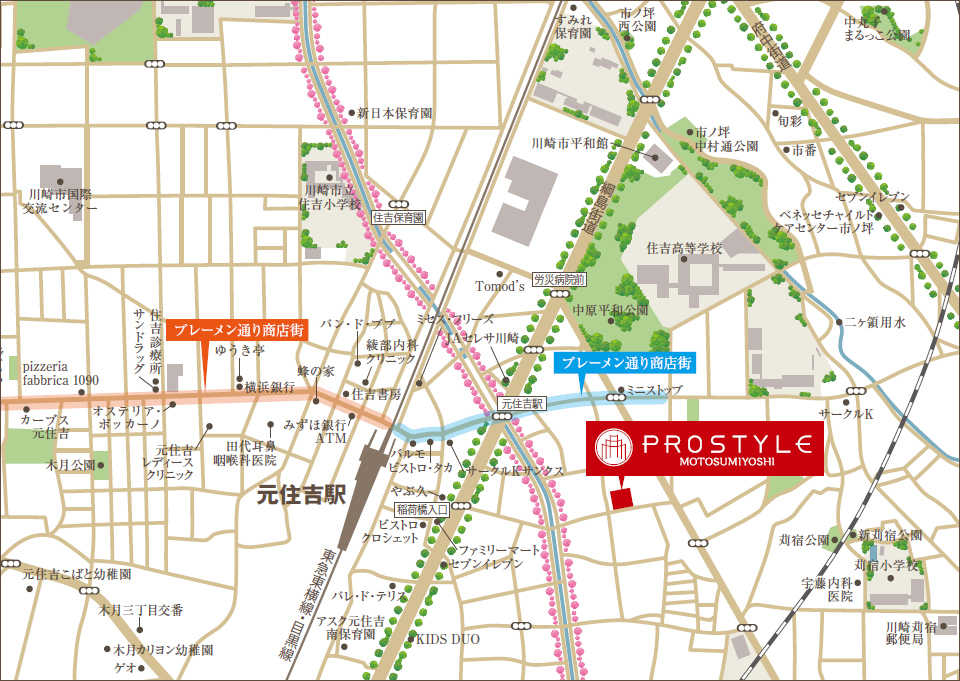
- 木月住吉町会館徒歩3分／約220m
- 川崎市役所 こども本部西加瀬
こども文化センター徒歩5分／約400m - 中原警察署徒歩16分／約1,300m
- 川崎市立図書館徒歩18分／約1,400m
- 中原区役所 保健福祉センター徒歩24分／約1,860m
- 住吉子の神前公園徒歩2分／約120m
- 渋川の桜並木徒歩2分／約130m
- 木月住吉北公園徒歩4分／約270m
- 木月住吉南公園徒歩5分／約350m
- 川崎市中原平和公園徒歩5分／約360m
- ビバスポーツクラブ徒歩13分／約1,000m
- 瀬野歯科医院徒歩2分／約100m
- 川崎幸病院中原分院徒歩2分／約150m
- よこせ耳鼻咽喉科クリニック徒歩4分／約275m
- 北村医院徒歩5分／約340m
- 関東労災病院徒歩6分／約450m
- ローソン 木月住吉店徒歩3分／約210m
- マックスバリュエクスプレス
木月住吉店徒歩3分／約220m - オズ通り商店街徒歩3分／約220m
- セブンイレブン
川崎元住吉オズ通り店徒歩4分／約280m - ブレーメン通り商店街徒歩7分／約550m
- まいばすけっと 苅宿店徒歩8分／約700m
- 元住吉わおわお保育園徒歩3分／約240m
- わんぱく園元住吉園徒歩4分／約300m
- わおわお元住吉園徒歩5分／約400m
- 小学館アカデミー
かりやど保育園徒歩7分／約550m - 住吉中学校徒歩6分／約450m
- 東住吉小学校徒歩8分／約640m
- 川崎木月郵便局徒歩2分／約150m
- 三井住友銀行 元住吉支店徒歩4分／約290m
- ゆうちょ銀行 さいたま支店
東急東横線元住吉駅内出張所徒歩6分／約450m - 川崎信用金庫
住吉支店苅宿出張所徒歩7分／約550m
※掲載の所要時間は、徒歩：1分80mにて算出しています。
端数は切り上げています。
- 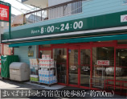
- 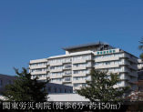
- 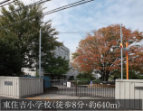
- 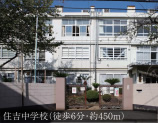
- 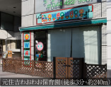